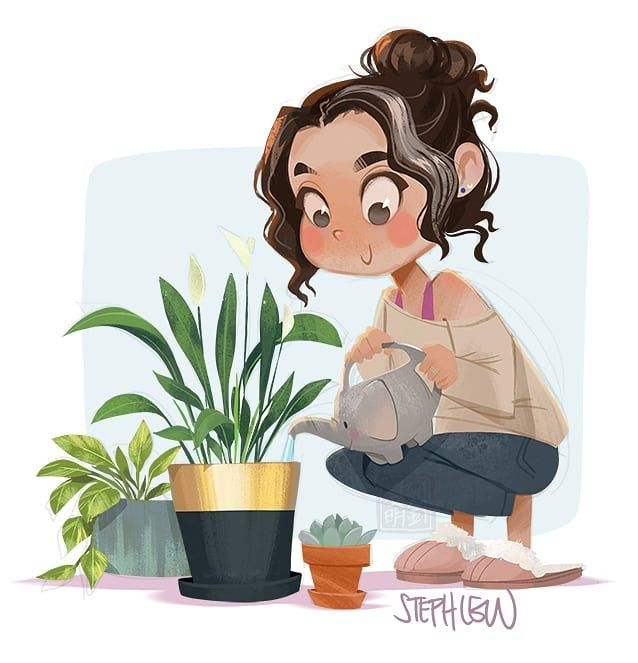
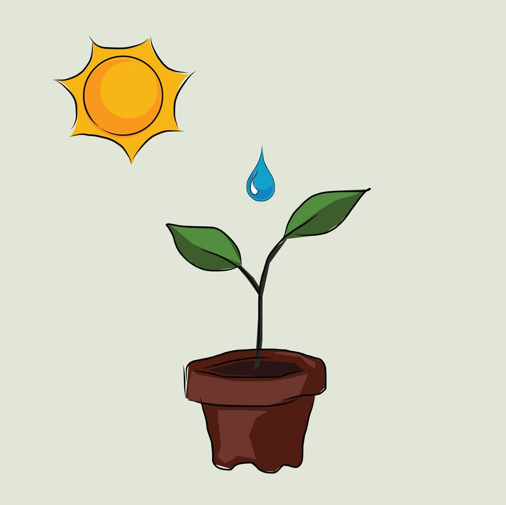
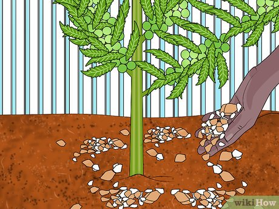

Login/signup
Login/signup
- Bloomtime Range: Early Summer to Late Summer
- USDA Hardiness Zone: 11 to 11
- AHS Heat Zone: Not defined for this plant
- Light Range: Shade to Sun
- pH Range: 6 to 7
- Soil Range: Sandy Loam to Clay Loam
- Water Range: Normal to Moist
Plants or Humans,
No one grows without
Love & Care!
ROSERY PEA CARING METHODS
REQUIREMENTS...
How to care Rosery Pea Plant?

WATER
How often to water your Rosary Pea Rosary Pea needs 0.8 cups of water every 9 days when it doesn't get direct sunlight and is potted in a 5.0" pot.Light
Rosary Pea love being close to bright, sunny windows.Place it less than 1ft from a south-facing window to maximize the potential for growth.
Rosary Pea does not tolerate low-light.


NUTRIENTS
How to fertilize Rosary Pea Select your region to see how the current weather in your area affects the placement of Rosary Pea in your home.Most potting soils come with ample nutrients which plants use to produce new growth.
By the time your plant has depleted the nutrients in its soil it’s likely grown enough to need a larger pot anyway.
To replenish this plant's nutrients, repot your Rosary Pea after it doubles in size or once a year—whichever comes first.